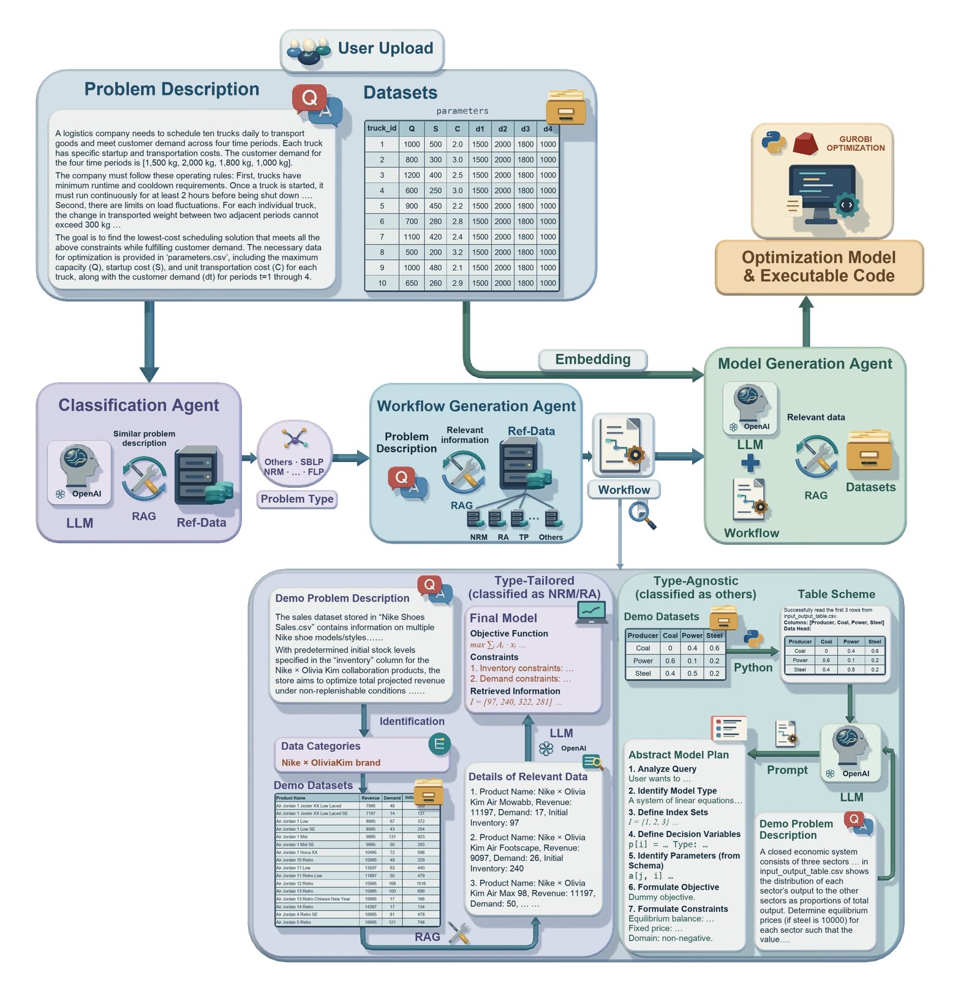

RESEARCH APPROACH
面向优化建模的
多智能体协作框架。
自然语言中的业务规则与表格中的数值共同决定模型的变量、目标和约束。LEAN-LLM-OPT 通过问题分类、类型相关工作流和按需数据访问，组织这一建模过程。
01
少样本示例检索示例提供问题结构、建模步骤和代码参考。
02
按需访问数据CSVQA 按建模步骤提取表格结构与数值。
03
模型与代码输出数学模型或建模计划、Python 程序与求解结果。
01 / QUERY + DATA FLOW
从查询与数据到求解结果。
流程演示查询、检索与数据访问
两组输入依次经过分类、建模和求解。
步骤聚焦蓝色：查询 · 绿色：数据 · 金色：产物TP · 类型定制工作流
02 / TRANSPORTATION CASE STUDY
运输规划案例
18 个配送中心、18 个客户、324 个运输变量。案例展示原始数据、数学模型、生成代码和运输方案。
TRANSPORTATION PLANNING实验记录
01 / 06
案例数据、生成程序与运输方案均可下载。
03 / EVALUATION RESULTS
基准测试与扩展实验。
比较两种基座模型在基准、参数扰动与结构修复测试中的表现。组件实验另行考察示例与数据访问方式。
指标与实验设置+
目标值匹配率：程序取得最优解，且目标值在指定容差内匹配参考最优值的比例；运行失败计入分母。数学表述等价性（EM）评估生成模型与参考模型是否等价。
图表保留来源报告的指标与精度。各实验的样本量、设置及来源见图表说明与资料入口。
04 / AIRLINE CASE STUDY
航空收益管理。
在模拟航空网络上，评估票价类别的容量分配，以及容量分配与航班选择的联合规划。
来源：研究稿件 · 模拟航空案例
05 / RESEARCH RESOURCES
论文、代码
与实验数据。
获取方法细节、实现代码和实验资料。
01 / PAPER
阅读完整论文
↗SSRN · 5329027
02 / CODE官方代码
↗GitHub · CoraLiang01 / lean-llm-opt
03 / DATA查看测试数据
↗Large-scale-or · Air-NRM · Small-scale
论文引用